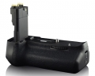

器材库 > 相机手柄 > Vertax E13 For Canon 6D

详细规格
发布日期
2012-12-21
适用机型
佳能 EOS 6D
电源
(1)一个或两个电池LP-E6 (2)6个AA/LR6尺寸碱性电池
电源开关
相机的电源开关
工作温度
0-40℃
工作湿度
不高于85%
尺寸
145.7×113×85mm
重量
（不含电池和电池匣的重量）293.35g
huangcy2014-06-19 12:214.6 分
操作性 5.00功能性 4.50美观性 4.50耐用性 4.00性价比 5.00
生活锈2014-06-19 12:194.6 分
操作性 5.00功能性 4.50美观性 4.50耐用性 4.50性价比 4.50
御风行2014-06-19 12:174.6 分
操作性 4.50功能性 5.00美观性 4.50耐用性 4.50性价比 4.50
产品图 / 样片
Vertax E13 For Canon 6D